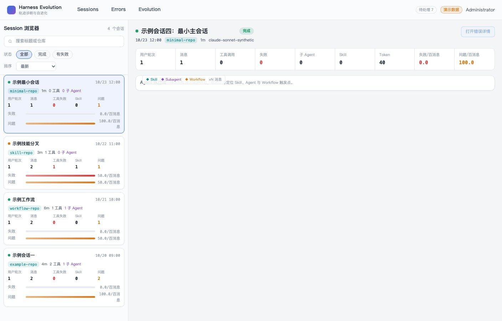
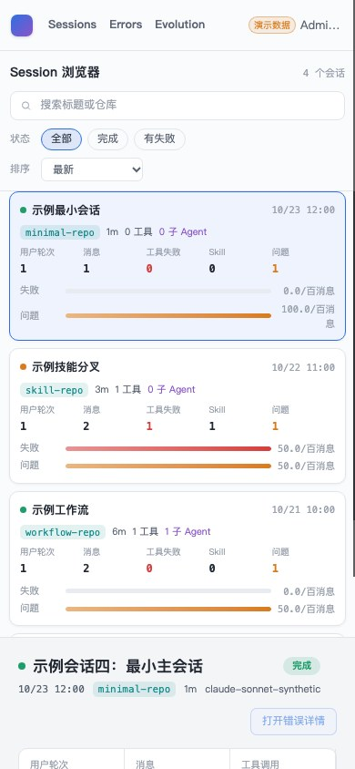

- Issue
- #46 · M4 external read models
- PR
- #112
- Commit
- f6cdb98
- Runtime
- FastAPI + SQLite + Vite + Chrome
- Evidence
- headless Chrome/CDP; macOS native CUA locked
Harness Evolution · PR #112
M4-01 外部只读问题模型集成冒烟
在隔离 SQLite 与真实 FastAPI/Vite/Chrome 进程上验证外部三表不随运行时启动创建、fixture 显式 bootstrap 后五态归因可读、所有仓库路径只发 SELECT，以及现有亮色原型壳和 390px 布局无回归。
9冒烟场景
9通过
0外部写 SQL
0控制台异常
Environment and Artifact
2026-10-26 · macOS · headless Chrome/CDP · commit f6cdb98Scenario Matrix
9 pass| # | 场景 | 结果 | 观测 | 证据 |
|---|---|---|---|---|
| 01 | 运行时迁移不创建外部表 | PASS | 空库启动 API 后只有内部表，bad_cases、bad_case_analysis、probe_reports 均不存在。 | runtime-summary.json: beforeTables |
| 02 | fixture 显式 bootstrap | PASS | 执行 fixtures seed 后外部三表出现，行数分别为 5、5、3。 | runtime-summary.json: after.counts |
| 03 | 五种展示态 | PASS | 真实 fixture 行解析出 unanalyzed、analyzed_nonissue、analyzed_issue_prompt/model/error 五态。 | runtime-summary.json: readModels.states |
| 04 | 第五态 issue-model | PASS | 单条详情稳定返回 analyzed_issue_model / model。 | runtime-summary.json: readModels.case5 |
| 05 | 只读 SQL 边界 | PASS | 捕获列表、详情、probe 反查全部 15 条 SQL，writeStatements 为空。 | runtime-summary.json: readModels.statements |
| 06 | Asia/Shanghai 时间 | PASS | 所有外部 created_at 的 UTC offset 均为 +08:00（28800 秒）。 | runtime-summary.json: readModels.states |
| 07 | probe 反向来源 | PASS | probe-synthetic-0001 稳定返回来源 badcase-synthetic-0001，无告警。 | runtime-summary.json: readModels.probe |
| 08 | 亮色原型壳 | PASS | 1408px 下 4 个 Session 卡可见，body rgb(244,245,247)、topbar rgb(250,251,252)/56px。 | screenshots/01-external-read-models-shell.jpg runtime-summary.json: desktop |
| 09 | 390px 与控制台 | PASS | 390px 下 4 卡单列，scrollWidth=clientWidth=390；浏览器 violations 为空。 | screenshots/02-external-read-models-390.jpg runtime-summary.json: mobile |
Issues and Observations
No defects foundNo defects were found.
Evidence
2 screenshots

Automated Coverage Assessment
4 areas reviewed| 区域 | 覆盖 | 结论 | 建议 |
|---|---|---|---|
| 外部表生命周期 | 空库真实 API 启动 + fixture CLI | 运行时零外部 DDL，fixture 显式 bootstrap。 | 生产部署由外部系统先建三表。 |
| 只读 repository/service | 真实 SQLite 查询 + SQL 事件捕获 | 所有公开读路径仅 SELECT，无写入。 | MySQL CI 继续执行同一契约。 |
| 五态与漂移 | fixture 五态 + 29 项聚焦测试 | 状态映射、时间与反向 probe 来源正常。 | m4-02 接入 HTTP 时沿用相同 read model。 |
| 浏览器 | 真实 Vite + headless Chrome/CDP | 亮色原型壳与 390px 无回归；外部问题 UI 尚未进入本 issue 范围。 | m4-03/m4-04 用原型错误页继续验收。 |
Conclusion
通过外部问题三表在真实进程边界内保持只读，五态 read model 与原型壳均正常，未发现集成缺陷。
- 运行时未创建外部表，fixture bootstrap 明确且可重复。
- 真实读路径只发 SELECT，时间统一 +08:00。
- macOS 原生 CUA 因锁屏不可用，浏览器证据使用真实 headless Chrome/CDP 并已明确标注。
证据源：隔离 SQLite、真实 FastAPI/Vite、headless Chrome/CDP、SQLAlchemy SQL 捕获。HTML 由 renderer 生成。